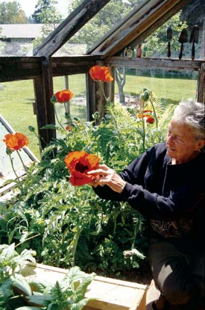

The phrase “the good life” conjures up different things for different people. For some, it’s about possessing sufficient material wealth to have and do what you want, whenever you want. For others, it’s about the spiritual riches that come with living in harmony with one’s values and natural surroundings. Others see it as a careful balancing act between the two.
My own search for the good life led me to The Good Life, the classic book by Helen and Scott Nearing that was first published in 1954 and expanded upon in 1979. I discovered the Nearings about a decade ago. I was in my early 30s and looking for a lifestyle that would allow me to live closer to the Earth and soil, literally. I was living in a sixth floor apartment in Brussels, Belgium, more than 3,000 miles from my Maine homeland.
The Good Life recounts how the Nearings escaped the urban jungle during the Great Depression to create a more meaningful, self-sufficient life in the country, initially in Vermont and ultimately at their Forest Farm homestead in Harborside, Maine. Reading about their life’s journey helped put me on a path of self-discovery that would take me back to Maine to establish a homestead of my own and ground me, literally and figuratively.
This year offers an opportunity for taking stock of the good life - the Nearings’ version of it and my own. It’s the 25th anniversary of Scott Nearing’s death and the 10th anniversary of the founding of The Good Life Center, the nonprofit formed to perpetuate the Nearings’ philosophies and life ways.
To understand the lasting nature of the Nearings’ work, it helps to travel to their Forest Farm yourself, as I did last August with my family. The pretext for my trip was a talk I was giving at the Center’s public Monday Night Meetings series, a community tradition started by the Nearings.
The first thing one notices upon arriving at Forest Farm is the rugged, natural beauty of the setting. As its name suggests, Harborside is a small coastal community located on Cape Rosier, a 10-square-mile peninsula jutting into Penobscot Bay.
The Nearings had three criteria in choosing their homestead site: arable soil, water views and isolation. They weren’t antisocial but, rather, anti-modern-society. Living in relative isolation allowed them to build and test their self-sufficient household model free from modern distractions.
My criteria for establishing a homestead resembled the Nearings’, but differed in a significant way. I, too, sought a simpler, more natural life with nearby ocean views and fertile soils. For a while, my wife and I considered buying seven isolated acres, imagining the outdoor adventures it would offer our boys. We opted instead to embrace society rather than flee it, buying a house in Scarborough, Maine’s fastest growing community with a population of 20,000. Socially, moving to Scarborough allowed us to build a stronger relationship with my parents, who still live there. My wife and I felt it was important for the emotional grounding of our children to have this close connection. Our three boys now live within walking distance of their grandparents, a rarity in America today.
Although the Nearings did not have children, I think they would have approved of this part of our calculation. One of the reasons the Nearings decided to leave their first homestead in Vermont was because they felt they had failed to build meaningful relationships with their neighbors and didn’t see any potential for doing so. If our own experiment in happy, self-sufficient living does not meet our expectations, it won’t be for lack of social opportunities.
The deep family connections we enjoy come at a price. Compared to remote Harborside, my town looks like boomtown with all the telltale signs of modern American suburbia: subdivisions, sprawl and drive-thru everything. If we chose to move into the belly of the beast, it was also because we felt there was more possibility to question and reform the consumerist philosophy from within than as outsiders. To do so, however, meant buying into some of the philosophy ourselves in the form of a mortgage, a decision the Nearings would not have supported. In order to be truly free, they thought one needed to be free of debts and free of the “stuff” Americans go into debt to acquire.
Our trip to Harborside last summer offered a refreshing break from the minivans, soccer fields and heavily leveraged homes of Scarborough. After its beautiful waterfront location, the second thing we noticed when pulling our own minivan into Forest Farm was the mailbox, which still bears the Nearing name. Scott and Helen may be long gone in body (they died in 1983 and 1995, respectively), but for those visitors who admire their writings, their presence can still be seen and felt. Their legacy lives on in their inspiring books, and in the sturdy stone home they built and the celebrated gardens they created.
As impressive as the physical structures, gardens and literary works themselves is the way they were created. The Nearings raised simple living to an art form, dividing their days into three units: four hours each for “bread labor;” for music, writing and avocations; and for social and civic interaction. Bread labor, for the Nearings, included physical tasks such as gardening, building projects and producing their “cash crops,” i.e. maple syrup in Vermont and blueberries in Maine.
The concept of bread labor remains an important one at Forest Farm. Today, the diverse and orderly gardens and structures are maintained by resident stewards who receive free room and board at the farm in exchange for their work. Although the main walled garden is only about 40-by-40-feet, it’s bursting with healthy plants.
While the Nearings did not plant any of the annuals we saw growing during our stay, the plants’ health and vibrancy were very much part of their legacy, too. The Nearings were organic gardeners of the first order, methodically building up the fertility of their soils through composting.
So great was their composting enthusiasm that they “flunked” a soil test they had sent to the University of Maine. The report came back saying: “too rich; cut down on your compost spreading.” Coincidentally, I recently received the results of my own soil test from the University of Maine, and I’m still a long way from “failing” it. The good news is that my soil, although sandy, is naturally mineral-rich. With a little labor this year and next, I should be able to achieve an organic matter level over the magic 5 percent. Therein lies the challenge. Working in the garden for me and many other modern-day Nearingites is not our bread labor as much as it is our leisure.
One of the other obvious differences between my pursuit of the good life and the Nearings’ is that I’m trying to do what they did for a homestead of five instead of two. Their goal of finding balance between bread labor, leisure, and social and civic engagement is an important part of their legacy, but it remains a fleeting goal for many parents who juggle childcare, organic gardening and community service with jobs that offer benefits and allow them to save for college educations. Despite my best efforts, my cash crops - creating words for magazines and social change for nonprofit groups - still take far more than four hours a day to produce.
This year’s anniversaries offer an opportunity to take a fresh look at the Nearings’ efforts to live simply. Governments and companies are furiously proposing solutions that will allow us to consume happily in a warmed, resource-depleted world. It would be understandable if the Nearings’ soft-spoken lessons for living a responsible life got lost in all the eco-friendly noise. But it would also be unfortunate, because their writings are even more relevant now given the challenges upon us.
To measure the Nearings’ legacy accurately, one must consider their accomplishments, but also those of the many people who were profoundly influenced by the Nearings, and went on to make the world a little saner in their own way. These include organic agriculture advocates Eliot Coleman and Barbara Damrosch, who live just up the road from Forest Farm on land purchased from the Nearings, and Pulitzer Prize-winning author and historian Studs Terkel, who admired and wrote about the Nearings’ efforts to define the American dream along more sustainable lines.
While my own accomplishments may not rank with theirs, I suspect that if the Nearings were alive today they would find my attempt at living the good life in boomtown not so bad. Last year, my family and I managed to meet half of our fresh produce needs through our modest one-third-acre suburban lot, and helped some of our neighbors dig new gardens, too. There’s still much work to be done to bring the world and my own part of it into proper balance, but it’s work with a purpose, which was the work that Helen and Scott liked best.
You can visit the scenic homestead built by Scott and Helen Nearing, located near Harborside, Maine. It is now known as The Good Life Center. The Center’s mission is to perpetuate the philosophies and life ways promoted and exemplified by the Nearings. A range of public programs promote participation in the advancement of social justice; creative integration of the mind, body and spirit; and deliberate choice in living responsibly and harmoniously in an increasingly complicated world. Learn more at The Good Life Center Web site.
|
LYNN KARLIN The late Helen Nearing, socializing with visitors in her Forest Farm food gardens. |
 LYNN KARLIN The late Helen Nearing, tending her poppies. Scott and Helen Nearing dedicated four hours a day to “bread labor,” which included gardening and other physical activities. |
LYNN KARLIN The Nearings kept their pantry well-stocked with homegrown foods. |
|
JENNIFER SMITH-MAYO You can visit the scenic homestead built by Scott and Helen Nearing, located near Harborside, Maine, now known as The Good Life Center. A range of public programs promote participation in the advancement of social justice, creative integration of the mind, body and spirit, and deliberate choice in living responsibly and harmoniously in an increasingly complicated world. |
ROGER DOIRON The author and his sons tend their suburban garden, which supplies half the family’s produce. |
LYNN KARLIN The Nearing homestead is a showcase of rustic, durable and lovingly made goods. |
|
LYNN KARLIN Even though Scott and Helen Nearing are no longer with us, you can enjoy their gorgeous seaside homestead, which is open to visitors year-round. |
|
|